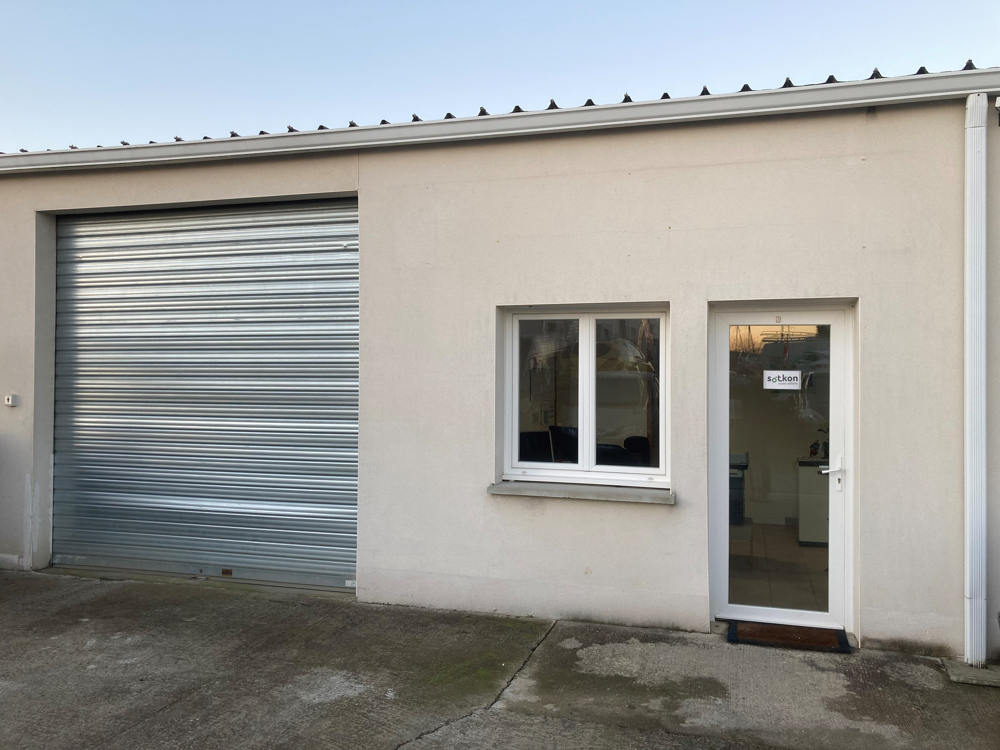

Urban waste infrastructure
Cleaner cities need quieter infrastructure.
Sotkon designs underground, semi-underground and intelligent waste systems that reduce street clutter, collection frequency and operating cost.
The Sotkon Koncept
High-capacity collection points without heavy visual impact.
Sotkon systems are engineered to make municipal waste collection simpler: modular equipment, pre-assembled delivery, fast installation, safe operation and a design language that can sit naturally in historic streets, residential districts and high-traffic public space.

Installed system
Visible above ground only where the citizen interacts. Capacity lives below the street.
Product architecture
One family, multiple urban answers.

Flagship
Koncept underground system
A patented high-capacity storage system designed for simple collection, low maintenance and seamless public-space integration.
Evos
Compact, robust underground equipment where the system moves as one during collection.
Integra
Automated side-loading operation with simple mechanisms and Wi-Fi control.
Qubus
Semi-underground placement for streets with underground obstacles or harsh winters.
Oily and O+
Surface systems for cooking oil, organics and specific collection streams.
Operational case
Less route pressure. More capacity where people actually need it.
The commercial argument is not only cleaner streets. Sotkon changes the operating model: fewer collection trips, fewer people required per operation, less vehicle pressure and longer intervals between maintenance events.
Model
Capacity
Savings
Door-to-door
100L
baseline
Surface
1000L
5%
Underground
3000L
20%
Sotkon Koncept
3000L
30%
Project path
From urban constraint to installed system.
Survey
Understand waste streams, vehicle fleet, street constraints and pedestrian flow.
Configure
Select underground, semi-underground, surface and intake-column options.
Install
Deploy modular pre-assembled equipment with a low-disruption installation plan.
Optimise
Add SOTKIS sensors and access modules to improve collection routes and policy.
Connected operation
Hardware prepared for intelligent city management.
SOTKIS adds the operational layer: fill-level monitoring, access control and PAYT-ready data. Municipal teams can understand usage patterns and collect only when the system says collection is needed.
Ultrasonic fill-level monitoring for route planning and unnecessary-trip reduction.
RFID-based usage data by user, waste stream, time and deposit event.
Data foundation for fairer, behaviour-aware waste taxation models.

Citizen interaction
The interface is simple because the engineering is not.
Residents see a clean intake column, clear waste-stream identification and optional access control. Operators get durable equipment, serviceable mechanisms and data when the city needs a smarter waste policy.
Sotkon since 1995
An international manufacturer for circular-economy infrastructure.
Sotkon designs, manufactures and sells underground and semi-underground waste systems with patented products, high-quality stainless steel, anti-corrosion processes and safety-led engineering.

Preview conversion path
Turn the prototype into a procurement-ready website.
Next we should build product pages, case studies, multilingual content, real catalogue downloads and a working contact pipeline for municipalities, operators and distributors.
Recommended next sprint
- Real logo and brand lockup
- Product detail pages for Koncept, Evos, Integra and Qubus
- Case-study template with savings and installation data
- Multilingual structure for EN, PT, FR, ES and RO